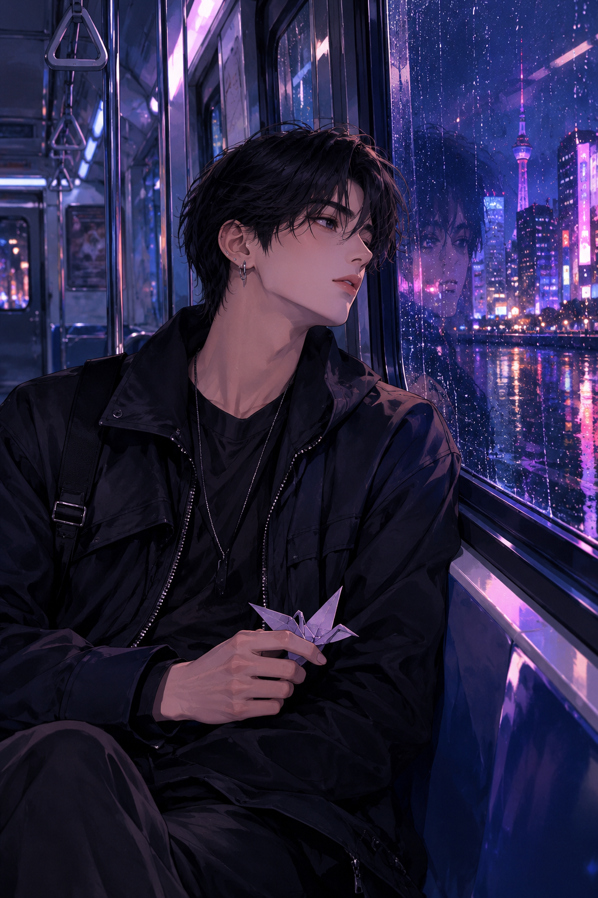

K-pop-inspired fanfiction · Episode 01
The Last Train to Seoul
The Seat by the Window
A night-shift illustrator finds unsigned sketches on the last train. A fictional K-pop star named Kim Min-jae knows why they match a melody no one has heard in years.

Unofficial, fictional K-pop-inspired alternate universe. Kim Min-jae is an original fictional character, not a representation of or affiliated with BTS or any real artist.
At 12:17 a.m., Seoul looked like a city someone had painted with wet neon. Hana boarded the last train with ink on her fingers and three hours of sleep left in her week.
The seat by the window was empty — except for a folded paper crane. Inside its wings was a tiny pencil sketch of the station clock, stopped at 12:17.
“You found it.” A young man in a black cap stood by the doors, mask tucked under his chin, a guitar case resting against one shoulder. His voice was familiar in the way a song from childhood is familiar.
Hana held up the crane. “Did you draw this?” He glanced at it, then at the empty platform slipping past the glass.
“I drew the first one. I didn’t leave this one.”
His name was Kim Min-jae. Online, he was known for sold-out shows and never giving interviews. Here, he looked like someone who had been awake for far too long.
Hana opened her sketchbook. The stranger’s drawing matched a page her missing brother had made years ago: the same clock, the same station, the same little star hidden in the corner.
Min-jae saw the star and went completely still. For the first time, the practiced smile disappeared from his face.
“Where did you get that?”
The train lights blinked once. Every window turned black, reflecting only the two of them — and, between their reflections, a third figure standing in the next carriage.
Min-jae stepped in front of Hana. From his guitar case came a single, impossible note: the opening of a melody that had never been released.
“When the doors open, don’t follow the person who looks like me.”